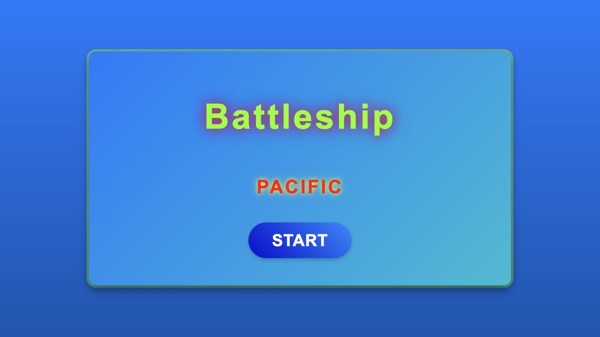

01 / WEBGAME
Live demo

HTML · CSS · JAVASCRIPT
Battleship Pacific
Een strategische webgame: plaats je vloot en speel tegen een computertegenstander.
- Vloot plaatsen op het speelveld
- Spelen tegen de computer
Meer over dit project
- Het idee
- Een zeeslagspel waarin je een land kiest, vijf schepen plaatst en tegen de computer speelt.
- De uitwerking
- JavaScript beheert twee 10 × 10 speelvelden, controleert de plaatsing van schepen en wisselt de beurten af. HTML en CSS verzorgen de schermen en visuele feedback.
- Een technische uitdaging
- De overgang van landkeuze naar het spel liep vast door verwijzingen naar ontbrekende afbeeldingen. De vlaggen worden nu rechtstreeks in de bordtitels getoond, zodat het spel kan starten.